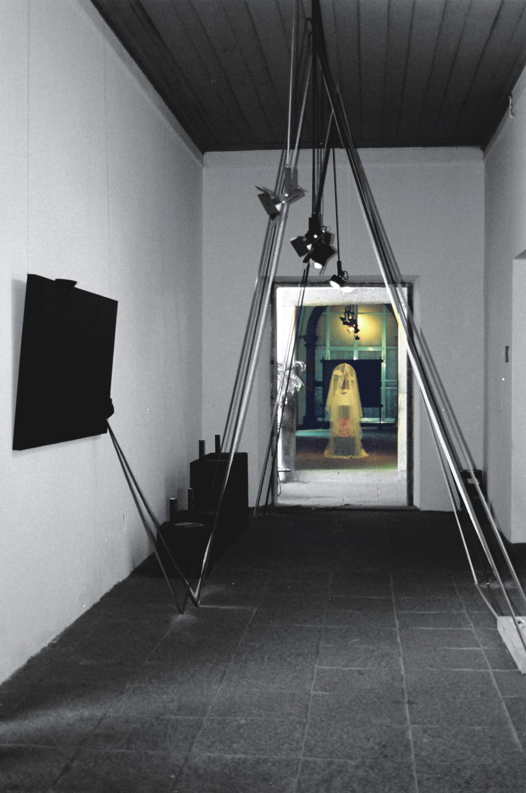
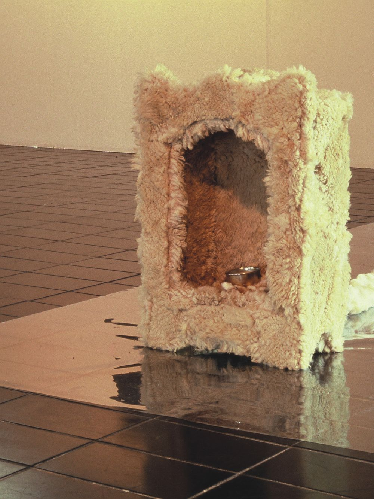
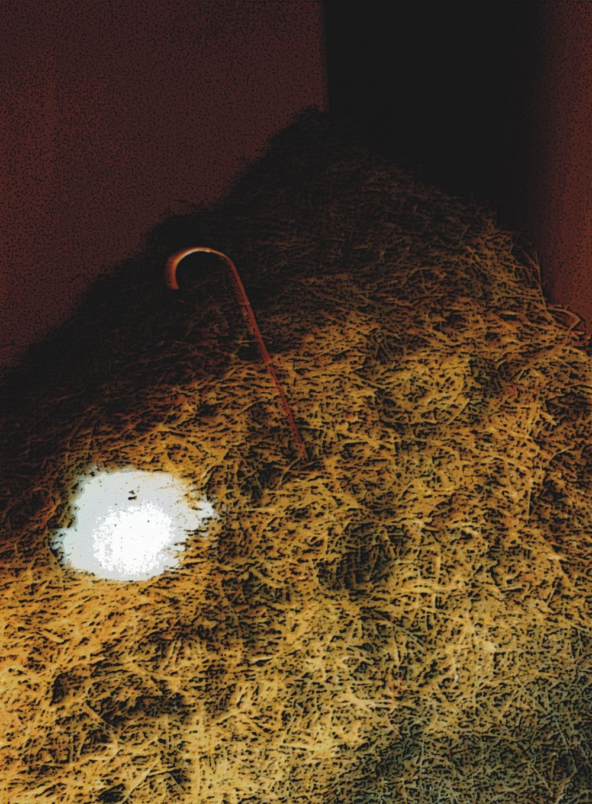

Livro · Instalações Barja · 2005
Antologia da Obra
O livro Instalações Barja reúne, pela primeira vez, os registros das instalações de Wagner Barja — uma obra altamente coesa, do profeta e a jaguatirica às armadilhas semânticas. Com textos críticos de Álvaro Faleiros, Roland de Campos, Marília Panitz, Mercedes Replinger, Bené Fonteles, Eugène Bavcar e outros.
Textos críticos
Apresentação
Pela primeira vez reunidos em livro, os registros das instalações de Wagner Barja permitem um olhar sobre uma obra altamente coesa, constituída ao longo do tempo no vórtice de questões que atravessam a arte: a palavra, a imagem, o objeto, o corpo e a cidade.
Álvaro Faleiros — do livro Instalações Barja (2005)
Do AKD-mico ao POLÊ-mico
Análise do poema-rebus AKD-Mico (1986): bananas formam as letras A, K e D, ao lado de um pequeno mico vivo — mensagem crítica ao establishment artístico, com verve satírica. O poema liga-se à linhagem da poesia visual.
Roland de Campos — do livro Instalações Barja (2005)
Ao que Importa — Uma Resposta
Sobre o ângulo adequado para poetizar o mundo: reduzir ‘um problema intrincado a pontos simples e claros…’. Diversão e complexidade, como deve ser a vida.
Marília Panitz — do livro Instalações Barja (2005)
Linguagem do Olhar
O olho tem uma história e uma linguagem que nos fala. A obra de Barja é abordada a partir da escuta desse olhar: da luminosidade à obscuridade, até o olho pineal que a tradição imaginou para contemplar o sol.
Mercedes Replinger González — do livro Instalações Barja (2005)
A Escuta de uma Pintura
O filósofo cego escuta a pintura de Barja: naquele dia, o sol lançava seus fogos sobre o Rio de Janeiro, e a voz de Wagner Barja contava os fatos picturais.
Eugène Bavcar — do livro Instalações Barja (2005)
Mognus Dei
Sobre a armadilha-obranome de Barja: estrategicamente posicionada no vórtice do cruzeiro, a peça está ‘pronta para mexer com a imagética’ do poder — um Barja canibal, que devora o símbolo-mito.
Bené Fonteles — do livro Instalações Barja (2005)
Documentos incertos: no lugar do monstro
O animal fantástico é uma ofensa à Criação. Em ‘São João Beuys’, Barja recorda a peça SaFG-SaUG de Beuys e associa as travessias de São João e Beuys, ambos profetas no deserto.
Mercedes Replinger González — do livro Instalações Barja (2005)
As instalações
Todas as obras do livro, cada uma com os textos que falam dela e com as imagens das páginas em alta resolução.
 DA2
DA2
 O Profeta e a Jaguatirica
O Profeta e a Jaguatirica
 Expressosionismo
Expressosionismo
 Pega Monet, Pega Manet
Pega Monet, Pega Manet
 Neoconcreto
Neoconcreto
 De Onde Vem a Escuridão
De Onde Vem a Escuridão

O Casamento de Márcia X com Marcel Duchamp H2O Monet
H2O Monet

São João Beuys Jardim de Bengalas
Jardim de Bengalas

Agulha no Palheiro O Sol de Goethe
O Sol de Goethe
 Cegomóvel Hermógenes
Cegomóvel Hermógenes
 Medusa
Medusa
 TV Anal
TV Anal
 Caverna
Caverna
 Cultura x Natureza = Barbárie
Cultura x Natureza = Barbárie
 Cubo Cruz Lápide
Cubo Cruz Lápide
 FIKE
FIKE
 Deitado Eternamente
Deitado Eternamente
Ficha técnica do livro
Organização editorial e pesquisa: Maria Gorette de O. Azevedo Barja · Digitalização e diagramação: Paulo Cesar Müller · Fotos: Gustavo Magalhães, Mila Petrillo e Gabriel Barja · Tradução: Andrea Lee Katz · Revisão: Yves Hubleto.